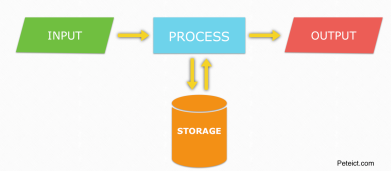
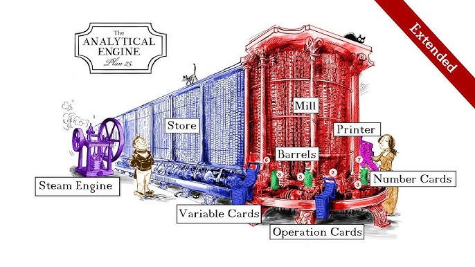
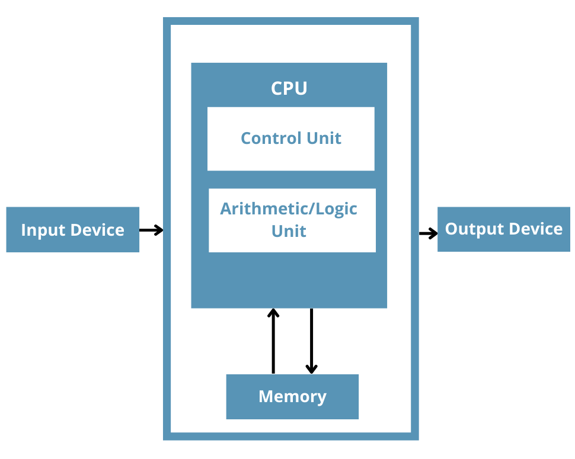
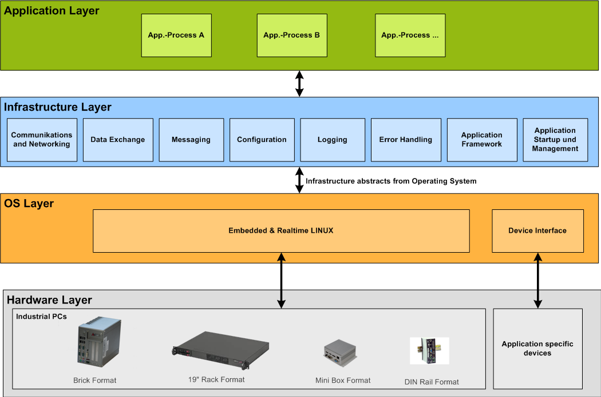
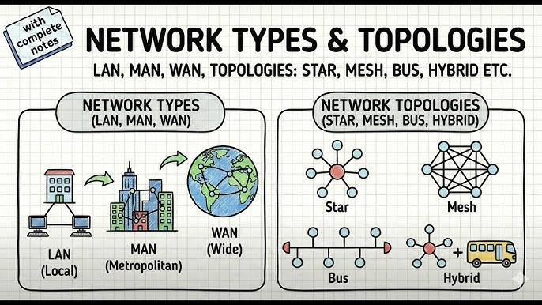

1. Definition of a Computer
A computer is an advanced electronic data-processing device that accepts raw data as input from the user, processes it under the control of a set of instructions (called a program), produces a meaningful result (output), and saves it for future use. It is widely referred to as a Data Processing Machine because its core function revolves around transforming raw facts into useful information.
The Data Processing Cycle
- Data (Input): A collection of raw, unorganized facts and figures. Data represents raw input that becomes meaningful information only after proper organization and processing.
- Processing: The internal manipulation of input data by the central processing unit. This includes performing complex arithmetic calculations and logical operations to convert the raw data into a desired, structured format.
- Output: The final processed result, now converted into meaningful information, which is presented to the user and is available for direct use or application.

Uses of Computers in Society
Computers form the backbone of modern infrastructure. Their primary uses span across numerous sectors including: Banking and Finance, Postal Services, Airline ticketing and navigation, Astronomy, Astrology, Railway management, Corporate Business, the Medical field (diagnostics and surgery), and Education.
2. Evolution of the Computer
Father of the Computer: Charles Babbage (26.12.1791 to 18.10.1871). A renowned British Mathematics Professor who conceptualized the first automatic mechanical computer.

Historical Timeline
| Year | Invention | Inventor / Detail |
|---|
| 3000 BC | Abacus | Ancient Origins (First manual calculating device) |
| 1642 | Pascaline | Blaise Pascal |
| 1672 | Mechanical Calculator | Gottfried Wilhelm Leibniz |
| 1804 | Automated Loom | Joseph Marie Jacquard |
| 1822 | Difference Engine | Charles Babbage |
| 1842 | Analytical Engine | Charles Babbage (First concept of programmable computer) |
| 1937 | Mark 1 Computer | Howard H. Aiken |
| 1945 | ENIAC | J. Presper Eckert & John Mauchly (Electronic Numerical Integrator & Calculator) |
| 1946 | EDVAC | John von Neumann |
| 1948 | ABC Computer | John Atanasoff & Clifford Berry |
| 1950 | IBM 650 | The world's first mass-produced computer |
| 1960 | Mainframe Computer | Era of massive computing systems |
| 1968 | Minicomputer | Smaller, faster mid-range systems |
| 1980 | Supercomputer | High-performance computing for advanced research |
3. Classification of Computers
Computers are broadly classified into two distinct categories based on their operational mechanisms (purpose) and their physical size and processing capabilities.
A. As per Purpose (ଗଣନା ଯନ୍ତ୍ର)
This defines how the machine fundamentally processes signals and data. It is mainly divided into three types:
1. Digital Computer
A type of computer that processes information in a discrete form using binary numbers (0s and 1s). It utilizes digits, alphabets, mathematical symbols, and numericals to perform exact calculations, create reports, facilitate normal entertainment, and manage various office tasks. Primarily used in homes, corporate offices, and by businessmen.
2. Analog Computer
A highly specialized computer designed to process continuous, dynamic data rather than discrete numbers. It is used to measure constantly changing physical quantities like fluid pressure, voltage, and temperature. Because it deals with continuous data, it always gives an approximate, comparative result rather than an exact digit. A primary application is weather forecasting (ପାଣିପାଗ).
3. Hybrid Computer
A specialized computer that combines the continuous measurement capabilities of an analog computer with the exact logical processing capabilities of a digital computer. These are most heavily utilized in complex scientific and medical fields, such as ICU patient monitoring systems.
B. As per Size (ଆକାର ଅନୁସାରେ)
This categorizes computers based on their physical footprint, processing speed, and architectural generation:
1. Microcomputer (1974)
The smallest tier of functional computers available, utilizing a single microprocessor as its CPU. It is commonly known as a Personal Computer (PC) because it is designed for individual use handling personal tasks such as creating reports, drafting documents, and browsing. Features: Highly software-oriented and extremely portable (ଛୋଟ କମ୍ପୁଟର ନବା ଆଣିବା ସହଜରେ କରିପାରିବା).
2. Minicomputer (1968)
Popularly recognized as the "elder brother" of the computer era. Compared to a microcomputer, a minicomputer operates significantly faster, possesses a much larger storage capacity, and features a substantially larger RAM allocation to handle multiple users concurrently.
3. Mainframe Computer (1960)
Recognized as the massive "grandfather" of the computer era. These are industrial-scale machines that are extremely fast. They feature immense storage capacities and enormous amounts of RAM designed specifically to process millions of transactions and heavy data loads simultaneously for large organizations.
4. Supercomputer (1980)
The ultimate and most powerful tier of computers available today. The first supercomputer was invented by Seymour Cray (CDC-1604). The very first Indian-developed supercomputer was named PARAM. These machines are exclusively utilized for massive simulations, Defense operations, and cutting-edge Research by Scientists.
4. Computer System Architecture
System: A system is formally defined as a group of interacting or interrelated parts (such as people, methods, and physical materials) working together to achieve a common objective. A computer is a programmable electronic device that can store, retrieve, and process data. The computer system is comprised of three core components:
Hardware
The tangible, physical components of the computer system. Hardware encompasses any part of the computer that you can physically touch and see. This includes the CPU, peripheral input devices, output monitors, and physical storage drives.
Software
The non-material, logical component of the computer. Software is a structured set of programming instructions that controls and directs the hardware on how to perform specific tasks. This category includes System Software (operating systems), Application Software, the CU, ALU, and Utility Software.
Humanware
The human element of computing. This refers to the users, programmers, and system administrators who operate, design, and maintain the computer systems.

Peripherals: Input & Output Devices
- Input Device: An electromechanical device that provides human-to-machine communication. Input devices capture data in various external forms (text, sound, motion) and convert it into binary electronic signals (0s and 1s) that can be understood and processed by the CPU. Simply put, these devices enable the user to enter data, commands, and programs into the system. Examples include: Keyboard, Mouse, Optical Mark Reader (OMR), Optical Character Reader (OCR).
- Output Device: An external hardware component connected to the computer system tasked with translating the processed machine data back into a human-readable form. These devices allow the outside world to receive information and enable the user to see (ଦେଖିବାକୁ ପାଇବା) the visual results of word processing, data manipulations, and calculations. Examples include: Printers, Modems (Modulator-Demodulator), and VDT (Video Display Terminals).
Deep Dive: The Keyboard
The keyboard is the primary text-based input device, structured to send distinct command signals and textual information to the computer. It comprises several specific key groupings:
- Alphanumeric Keys: The core typing block used to input written text, alphabets, and standard numerical data.
- Function Keys: The sequence of twelve keys located across the top row (labeled F1 through F12). They are programmed to execute specific shortcut commands depending on the active software.
- Control Keys (Booster Keys): Keys such as Shift, Ctrl, and Alt. They do not produce a character on their own but are used in combination with other keys to issue complex system commands.
- Enter Key: Executes a typed command, finalizes a selected option from a menu, or marks the end of a line (functioning historically like a typewriter's carriage return).
- Backspace & Space Bar: The Backspace key deletes a single character immediately to the left of the flashing cursor. The Space Bar inserts a blank space between words to structure sentences.
- ESC (Escape): Located in the upper left-hand corner, this key is universally used to cancel or abort a current selection or process.
- Tab: Advances the cursor forward to the right by a predefined number of spaces, used heavily for indenting text or jumping to the next cell in a spreadsheet.
- Caps Lock & Shift: Caps Lock is a persistent "toggle" key that locks the alphabetic output strictly into uppercase. Shift temporarily accesses upper-case characters and secondary symbols printed on the upper half of standard keys.
- Arrow Keys: Directional keys utilized to manually navigate the cursor up, down, left, or right across the screen.
- Navigation Toggles: Include Insert (switches between inserting text and typing over existing text), Home (moves the cursor to the exact beginning of a line), End (moves the cursor to the extreme end of a line), and Page Up / Page Down (used to scroll vertically one full screen at a time).
- Numeric Keypad: Located on the far right, mimicking a standard calculator pad for rapid numerical entry. It is controlled by the Num Lock toggle key.
- Special Operations: The Application key acts as a right-click to produce shortcut menus. Print Screen, Scroll Lock, and Break are heritage keys primarily used in DOS environments to manipulate screen displays and interrupts.
Scanners, Printers & Monitors
- Scanner: A sophisticated input device that optically captures images from photographic prints, posters, and physical documents, converting them into digital images for computer editing and display. Scanners can operate in black-and-white or full color. High-resolution scanners are required for professional printing, whereas low-resolution scanners suffice for basic on-screen display.
- Printer: An output device engineered to produce a permanent physical record of electronic documents on paper. The resulting physical paper copy is officially referred to as a "print out". Printers are classified by their output quality and page-per-minute printing speed. Common variants include Dot Matrix, Chain, Drum, Inkjet, and Laser printers.
- Monitor: Officially known as a Visual Display Unit (VDT). It is the primary visual output device. The transient, on-screen display of information generated by the monitor is formally referred to as a "soft copy", as opposed to the "hard copy" produced by a printer.
The Central Processing Unit (CPU)
The CPU is universally recognized as both the brain and the heart of the computer system. It is the core circuitry where all active data processing occurs; it retrieves instructions from memory, decodes them, and processes the inputs. The combination of the Control Unit, the Arithmetic Logic Unit, and the primary memory is jointly referred to as the CPU.
- C.U. (Control Unit): The managerial component of the CPU. It strictly dictates the sequence of internal operations, interprets coded software instructions, and seamlessly directs the hardware components to execute the program.
- A.L.U. (Arithmetic Logic Unit): The mathematical and decision-making component of the CPU. This is where all quantitative arithmetic expressions (addition, multiplication) and qualitative logical comparisons (determining if a value is greater than, less than, or equal to another) are definitively executed.
5. Architecture and Classification of Memory
Computer memory acts as the electronic holding space for instructions and data that the microprocessor requires rapid access to. Formally called the Data Storage Unit, it is a physical medium designed to accept data, hold it securely, and deliver it exactly on demand at a later time. Memory architecture is divided into two primary tiers:
1. Main Memory (Internal / Primary Memory)
Main memory is an internally integrated, fundamental part of the CPU architecture. Every single instruction and piece of data required for an active, executing program must be housed temporarily within this internal memory. Because it is directly linked to the CPU via high-speed buses, it operates at lightning-fast speeds. It is split into two distinct types:
RAM (Random Access Memory)
- Mechanism: Data is accessed directly and randomly at any location at the exact same speed, rather than being read sequentially from start to finish.
- Function: It allows the processor to rapidly both Read existing data and Write new data.
- Material: Constructed utilizing integrated semiconductor circuits.
- State: It is highly volatile in nature. This means all stored data is permanently lost the moment the electrical power supply is turned off.
ROM (Read Only Memory)
- Mechanism: As the name strictly implies, data is pre-recorded, and the user cannot write or alter the instructions inside it.
- Function: It holds the critical, unchangeable boot instructions necessary to start the computer.
- Material: Historically developed using magnetic core technologies.
- State: It is definitively non-volatile. The data is permanent and is never lost, even when the system is completely powered down.
2. Auxiliary Memory (External / Secondary Storage)
Often referred to as Secondary Storage, this represents the permanent repository for data. All critical user files, operating systems, and applications are housed here for long-term future use. While it reads and writes data slightly slower than internal main memory, its storage capacity is exponentially larger and continues to increase as technology advances.
A. Magnetic-Based Storage
This technology relies on the magnetic properties of specific materials to retain data. Information is encoded onto a spinning surface that has been specially coated with a magnetic substance. Examples include magnetic tape drives and magnetic disks.
- Floppy Disk: A legacy portable storage medium consisting of a flexible, oxide-coated magnetic disk protected within a thin, square plastic jacket. Historically, the floppy disk evolved significantly: first appearing in 1971 as a massive 8-inch disk holding 1MB, shrinking in 1976 to a 5.25-inch format holding 1.2MB, and finally culminating in 1987 as the rigid 3.5-inch microfloppy. Features: Highly portable, extremely economical, but severely limited by low storage capacities.
- Hard Disk Drive (HDD): A heavy-duty, high-capacity storage device containing a series of large, rigid spinning magnetic platters sealed securely inside a vacuum case to prevent dust contamination. It acts as the primary, high-volume online storage device for almost all standard computers, holding data in the gigabyte and terabyte ranges. Features: Fixed permanently inside the system chassis, historically higher cost, but offers massive data storage capability.
B. Optics-Based Storage
A more modern development in secondary storage that utilizes highly focused lasers to read and write data via microscopic pits on a reflective surface, offering a completely different technological approach to magnetism.
- CD (Compact Disk): An optical medium primarily used to store digital audio and basic software installations.
- DVD (Digital Versatile Disk): An advanced optical format providing significantly higher storage capacity than a CD, utilized for high-definition video and massive software distributions.
6. Software & Operating Systems Depth
While hardware represents the physical, mechanical body of the computer, software functions as its intellect. A computer is merely a collection of metal and plastic until software is introduced. Software is the intangible collection of codified instructions that brings the hardware to life.
System Software (Operating Systems)
The Operating System (OS) is the master control program. It acts as the fundamental bridge allocating memory, managing system files, scheduling tasks, and interfacing directly with hardware components.
- Windows: The most widely adopted, user-friendly Graphical User Interface (GUI) OS for global personal computers.
- Linux / UNIX: A highly secure, incredibly stable open-source OS architecture used predominantly to run the world's backend servers and enterprise mainframes.
- macOS & Android: Apple's proprietary UNIX-based system, alongside the world's leading mobile touchscreen operating system.
Application Software
These are end-user programs specifically engineered to help human users accomplish distinct, real-world tasks rather than running the internal systems of the computer.
- Word Processors: Applications like Microsoft Word, utilized to create, format, and edit complex text documents.
- Spreadsheets: Applications like Microsoft Excel, utilized for rigid data tabulation, financial modeling, and automated mathematical logic.
- DBMS: Database Management Systems like MySQL or Microsoft Access, designed to securely catalog, manage, and retrieve massive digital data arrays.
Graphical User Interface (GUI) & Multi-User Architecture
- Window: A defined, bordered viewing area on a computer display screen. Modern OS environments like Windows utilize a Graphical User Interface to allow users to interact visually, enabling multiple windows (tasks) to be open and visible concurrently.
- Icon: A small, highly recognizable graphical picture that acts as a shortcut representing a file, folder, or executable program. Clicking or double-clicking the icon actively executes the linked program.
- Multi-User System: An advanced network architecture where a central CPU is made available to multiple unique users simultaneously. In this setup, vast arrays of data and physical resources (like printers) can be effortlessly shared, making the entire infrastructure highly efficient and economical.

Computer Languages & Code Translators
Computers fundamentally operate only on machine language (raw binary 0s and 1s). Human programmers write code in more readable, logical "High-Level" languages. Therefore, specialized translator programs are absolutely required to bridge this gap.
- Assembler: A specific translator program that converts low-level assembly language (which uses basic mnemonic codes) directly into pure machine code.
- Compiler: A highly efficient translator that scans the entire bulk of a high-level source code (like C++ or Java) and translates the entirety of it into an executable machine code file all at once before the program is ever run.
- Interpreter: A real-time translator that takes high-level source code and translates it line-by-line sequentially, executing each line immediately as it translates (commonly used in languages like Python).
7. Data Representation & Number Systems
In order to process complex media, a computer must mathematically convert all audio, video, text, and images into a raw digital format. This relies on distinct, strict numerical systems and universally standardized memory metrics.
Binary System (Base 2)
The native, foundational language of all modern computers. It consists entirely of just two digits: 0 (representing an electrical Off state) and 1 (representing an electrical On state). Every piece of complex data is eventually broken down into these binary streams.
Decimal System (Base 10)
The standard, conventional numerical system utilized by humans in daily life, consisting of ten individual digits (0 through 9). A computer must constantly run algorithms to translate our decimal inputs back into its native binary format.
Hexadecimal System (Base 16)
A more complex system utilized heavily by programmers to manage memory addresses. It uses sixteen distinct symbols: numbers 0-9 and letters A-F, allowing very long strings of binary code to be represented in a much shorter, human-readable format.
Standardized Units of Memory Data
| Unit | Abbreviation | Exact Value Definition |
|---|
| Bit | b | The absolute smallest unit of data; a single Binary Digit containing either a 0 or a 1. |
| Nibble | - | A grouped cluster of exactly 4 Bits. |
| Byte | B | A cluster of exactly 8 Bits, which is the exact amount of space required to store a single alphabetical text character. |
| Kilobyte | KB | Exactly 1,024 Bytes. |
| Megabyte | MB | Exactly 1,024 Kilobytes. |
| Gigabyte | GB | Exactly 1,024 Megabytes. |
| Terabyte | TB | Exactly 1,024 Gigabytes. |
8. Networking & The Internet
Computer Network: A sophisticated infrastructure established when two or more distinct computers are physically or wirelessly linked with each other specifically to send, receive, and share electronic data. Networks are essential for sharing digital resources, hardware, and applications securely.

Network Geographic Scales
Networks are classified based on the physical geographical area they successfully cover:
- LAN (Local Area Network): An intimate network covering a highly restricted geographical footprint, such as a single computer lab, a household, or an office building, usually connected via Ethernet cabling or localized Wi-Fi.
- MAN (Metropolitan Area Network): A significantly larger infrastructure designed to bridge multiple LANs together across a sprawling city environment or a large university campus.
- WAN (Wide Area Network): A massive, borderless network that covers vast geographical distances crossing states or entire countries. The global Internet itself is the ultimate, universally accessible WAN.
9. Cybersecurity & Threat Mitigation
As computers became universally interconnected, Cybersecurity emerged as a critical field. It involves the meticulous practices, software technologies, and strict user processes designed exclusively to protect networks, hardware, and sensitive user data from malicious attack, digital damage, or unauthorized infiltration.
Common Digital Threats (Malware)
- Computer Virus: A destructive piece of malicious code capable of copying itself to corrupt systems and destroy files. Crucially, a virus requires human action (like opening an infected attachment) to execute.
କମ୍ପୁଟର ସିଷ୍ଟମ ଜାଣିନଥିବା ଲୋକକୁ ସିଷ୍ଟମ ବ୍ୟବହାର କରିବାକୁ ଦବନି I ଗୋଟିଏ ସିଷ୍ଟମ ରୁ ଅନ୍ୟ ସିଷ୍ଟମ କୁ File, folder, other share କରିବନି କାରଣ କିଛି ଭାଇରସ ରହିଯାଇପାରେ I
Primary vectors include Email viruses and executable File viruses.
- Worm: Highly dangerous malware similar to a virus, but capable of autonomously replicating and spreading violently across live networks without requiring any human interaction.
- Trojan Horse: Destructive malware deliberately disguised as a legitimate, helpful application in order to trick the end-user into willingly installing it on their machine.
- Ransomware: A severe threat where malware successfully encrypts and locks a victim's personal files, followed by an extortion demand for a monetary ransom payment in exchange for the decryption key.
- Phishing: The deceptive, fraudulent practice of broadcasting fake emails designed to perfectly mimic reputable companies, aimed solely at inducing individuals to reveal sensitive personal information like banking passwords.
Defensive Countermeasures
- Antivirus / Anti-malware Programs: Dedicated security software persistently deployed to scan, identify, aggressively isolate, and permanently eliminate malicious software code from the system.
- Firewall: An intelligent network security barrier that strictly monitors, filters, and controls both incoming and outgoing internet traffic based on predetermined safety rules.
- Data Encryption: The mathematical process of scrambling readable data into an unreadable format, ensuring that even if stolen, only authorized parties with the correct key can decode and access the information.
- Authentication Protocols: The strict enforcement of verifying user identity before granting system access, utilizing strong passwords, physical biometrics, and Multi-Factor Authentication (MFA).